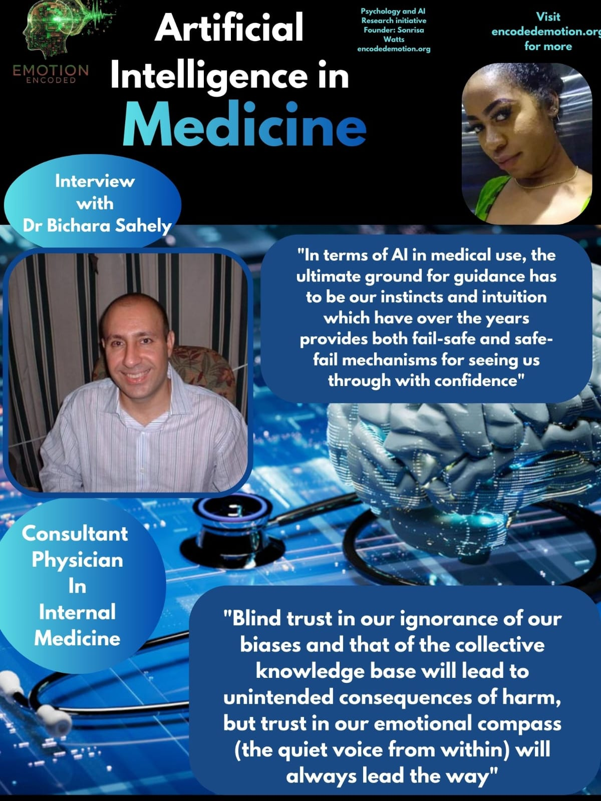

Interview with Dr. Bichara Sahely: Trust, Bias, and the Emotional Compass in AI
Published on September 13, 2025
At Emotion Encoded, we ask not just how artificial intelligence works, but how people feel about it. Instinct, intuition, and lived experience often shape the way we approach new technologies. Few understand this better than Dr. Bichara Sahely, Consultant Physician in Internal Medicine, who generously shared his perspective on the promises and pitfalls of AI in medicine.
Our conversation focused on four themes central to human-AI trust: status quo bias, automation bias, the illusion of explainability, and the risk of algorithms codifying injustice.
Status Quo Bias: Medicine Meets Change
Doctors are trained to trust their judgment and long-established practices. When asked if this creates hesitation around adopting AI, Dr. Sahely acknowledged the tension but also pointed to the opportunities:
“I cannot speak for other physicians, but I can see the value of using AI to do literature review, collate best practice guidelines, and to personalize treatment as best as is possible for a particular patient, given the limitations in human and medical resource availability. The more we use AI capabilities, the better we can partner its output with our own judgments and lived experiences to co-evolve a trustworthy partnership as a tool that best serves as an extension of our cognitive and caring abilities.”
For him, AI is not a threat to clinical autonomy. It is a chance to extend human care, provided it is paired with the wisdom of experience.
Automation Bias: The Danger of Over-Trust
AI outputs can look precise, which tempts professionals to lean too heavily on them. Dr. Sahely warns of the risks:
“Yes, we can overcompensate for our insufficiencies by following blindly their outputs without grounding in lived experiences. Therefore, we must be vigilant curators and ultimately responsible for and accountable in the most transparent manner the advice we give to our patients, based on our AI-augmented answers.”
He describes instincts and intuition, what he calls our “emotional GPS,” as an evolutionary safeguard. If AI aligns with this compass, trust can grow. If it does not, clinicians must resist the pull of blind deference.
Illusion of Explainability: When Clarity Misleads
AI often presents outputs in neat numbers or simplified explanations. Does this create a false confidence? Dr. Sahely sees nuance:
“As the saying goes, trust but verify. Explainability is not an illusion but a perspective from the corpus of knowledge collated in the training data from journals and guidelines. This should create a true sense of confidence if it resonates with our clinical instincts and intuitions which are not prone to cultural and cognitive capture and hijack.”
For him, AI explanations are not inherently deceptive. They must be tested against the clinician’s own knowledge and emotional compass to avoid false security.
Algorithms Codifying Injustice: Bias in Disguise
Finally, we asked about AI repeating biases already present in medical records. Could doctors catch this, or does trust in the system make it harder? Dr. Sahely’s answer was strikingly candid:
“We do not know what we do not know, and like all processes in life, there are blind spots through and through in our worldviews and also in the collective knowledge commons. So ultimately it would be our instincts and intuitions which would be our emotional compass/GPS to help us navigate successfully in the terrain of illness and diseases.”
He cautions that blind trust, whether in our own judgments or in AI systems, can lead to harm. Instead, he emphasizes cultivating a quieter, deeper trust:
“If we so choose to quiet the mind, open the heart, and allow the natural intelligence of love for ourselves, each other, and the planet move us in all that we think, feel and do each day.”
Closing Reflections
Dr. Sahely’s insights remind us that technology alone cannot define the future of medicine. Trust in AI must be balanced by trust in ourselves, our instincts, our intuition, and our responsibility to patients. In his words, the path forward is not blind adoption or blind rejection. It is a process of co-evolution between human and machine, guided by an emotional compass that has carried us through centuries of healing.